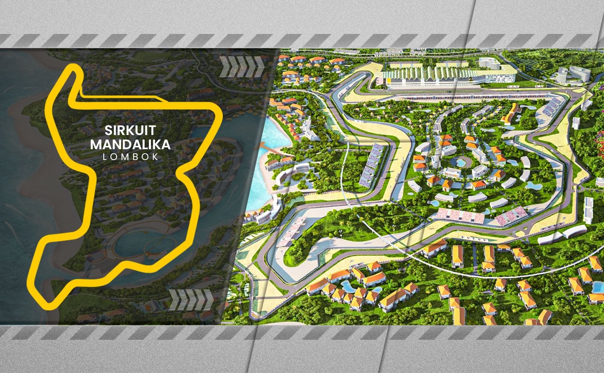

Sirkuit Mandalika
Sirkuit Mandalika adalah sirkuit balap internasional yang terletak di Kawasan Ekonomi Khusus Mandalika, Lombok Tengah, Nusa Tenggara Barat. Sirkuit ini menjadi tuan rumah untuk berbagai event balap internasional, termasuk MotoGP.
Lokasi: Kuta, Pujut, Kabupaten Lombok Tengah, Nusa Tenggara Barat
Panjang Sirkuit: 4.31 km
Kapasitas Penonton: 50.000 orang
Gunung Rinjani

Gunung Rinjani adalah gunung berapi aktif di Pulau Lombok dengan ketinggian 3.726 mdpl, menjadikannya gunung tertinggi ketiga di Indonesia. Rinjani menawarkan pemandangan alam yang menakjubkan dan pengalaman pendakian yang menantang.
Lokasi: Taman Nasional Gunung Rinjani, Lombok, Nusa Tenggara Barat
Ketinggian: 3.726 meter di atas permukaan laut
Waktu Pendakian: 2-4 hari (tergantung rute dan kecepatan)
Pantai Pink
Pantai Pink, atau Tangsi Pink Beach, adalah salah satu pantai unik di Lombok dengan pasir berwarna merah muda. Warna ini berasal dari serpihan karang merah yang bercampur dengan pasir putih, menciptakan pemandangan yang menakjubkan.
Lokasi: Sekaroh, Jerowaru, Kabupaten Lombok Timur, Nusa Tenggara Barat
Waktu Terbaik Berkunjung: Pagi hari atau sore hari untuk menghindari terik matahari
Aktivitas: Berenang, snorkeling, berjemur, dan menikmati pemandangan
Pura Batu Bolong
Pura Batu Bolong adalah pura Hindu yang terletak di atas batu karang di tepi pantai Senggigi, Lombok. Pura ini terkenal karena lokasinya yang unik dan pemandangan matahari terbenam yang spektakuler.
Lokasi: Jl. Raya Senggigi, Batu Layar, Kabupaten Lombok Barat, Nusa Tenggara Barat
Waktu Terbaik Berkunjung: Sore hari menjelang matahari terbenam
Tiket Masuk: Rp 20.000 per orang
Bukit Merese
Bukit Merese adalah salah satu destinasi wisata yang menawarkan pemandangan spektakuler di Lombok Tengah. Terkenal dengan panorama matahari terbenamnya yang memukau, bukit ini menjadi spot favorit para fotografer dan pecinta alam.
Lokasi: Desa Tanjung Aan, Kecamatan Pujut, Kabupaten Lombok Tengah, Nusa Tenggara Barat
Waktu Terbaik Berkunjung: Sore hari menjelang matahari terbenam
Aktivitas: Menikmati pemandangan, fotografi, piknik, dan trekking ringan
Masjid Islamic Centre Mataram
Masjid Islamic Centre Mataram, juga dikenal sebagai Masjid Raya Hubbul Wathan, adalah masjid terbesar di Nusa Tenggara Barat. Dengan arsitektur modern yang megah dan menawan, masjid ini menjadi landmark penting di kota Mataram.
Lokasi: Jl. Udayana No.8, Gomong, Kec. Selaparang, Kota Mataram, Nusa Tenggara Barat
Waktu Berkunjung: Setiap hari, 24 jam (untuk ibadah). Untuk wisatawan disarankan berkunjung di luar waktu sholat.
Fasilitas: Area sholat luas, menara pandang, taman, dan perpustakaan